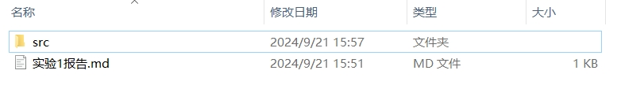

（1）掌握类的声明、定义与使用；
（2）理解对象创建过程与访问方法；
（3）理解类成员的概念和用法；
（4）理解静态环境的概念和用法；
（5）掌握成员的访问控制方法。
类是Java程序的基本单元，类定义了对象的基本状态和行为，状态用字段表示，行为用方法表示。
学习要求：熟悉类的声明和定义，包括关键词、标识符的用法、字段和方法的声明；熟悉类图的基本表示方法。
场景描述：定义一个圆形，包含一个半径字段，支持周长和面积计算。
（1）类图
（2）代码
public class Circle {
private double radius; // 半径字段，默认值为0.0
// 面积计算
public double area() {
return Math.PI * radius * radius; // 当前不存在变量名歧义时，this关键词可以省略
}
// 周长计算
public double perimeter() {
return Math.PI * radius * 2;
}
// 半径字段的访问方法
public double getRadius() {
return radius;
}
public void setRadius(double radius) {
this.radius = radius; // this是一种特殊参数，表示当前对象，由函数调用时传入
}
}
对象的创建（或类的实例化）过程需要调用构造器，当没有显式定义构造器时，每个类会隐式定义一个无参构造器。如下所示：
public class Circle {
// 隐式定义的无参构造器，不需要显式地写出代码
// public Circle() {} // 等价代码
}
当有特定需求时，可以自定义构造器：
public class Circle {
// 有参构造器
public Circle(double r) {
setRadius(r);
}
// 无参构造器
public Circle() {
this(2.0); // 默认半径为2.0，通过this关键字调用有参构造器
}
}
思考：构造器的定义顺序一般根据参数数量从高到低。参数越多，说明对象创建过程需要的信息越详细，少参数构造器可以基于多参数构造器来实现，这样可以提高代码复用率，降低维护成本。
通过new关键词和构造器来创建对象，返回对象的引用：
public class Test {
public static void main(String[] args) {
Circle c1 = new Circle(); // 创建半径为2.0的圆形，引用值赋给变量c1
Circle c2 = new Circle(3.0); // 创建半径为3.0的圆形，引用值赋给变量c2
}
}
对象初始化器（Object Initializer）是类中独立的一个代码块，在构造器的代码之前执行。如下代码，增加初始化器来打印一条提示语句。
public class Circle {
private double radius; // 半径字段
// 对象初始化器
{
System.out.println("创建圆形"); // 执行顺序：1
}
public Circle(double r) {
System.out.println("半径初始化"); // 执行顺序：2
setRadius(r);
}
public Circle() {
this(2.0); // 默认半径为2.0
}
}
继续采用2.2.1中的测试代码，运行结果如下：
创建圆形
半径初始化
创建圆形
半径初始化
对象成员主要是指没有使用static修饰的字段和方法。通常，创建对象后会将其引用值赋给一个变量，之后通过变量来访问对象成员。例如：
public class Test {
public static void main(String[] args) {
Circle c1 = new Circle(); // 创建圆形，将其引用赋值给变量c1
System.out.printf("面积:%.2f，周长:%.2f", c1.area(), c1.perimeter()); // 通过c1的值访问圆形成员
}
}
直接通过引用值访问对象成员：
public class Test {
public static void main(String[] args) {
System.out.printf("面积:%.2f", new Circle().area()); // 通过new关键字创建对象返回的引用值访问
}
}
思考：对象方法的代码存放在哪里？对象方法执行时如何获取对象引用的？
类成员由static关键词修饰，也称为静态成员，包含静态变量（类成员变量）和静态方法（类成员方法）。类成员不属于具体的对象，而属于类，可以看作这类对象的共同特征。例如，当前已创建的圆形数量，可以用静态变量来表示。
public class Circle {
private static int numberOfCircles = 0; // 已创建圆形的数量，初始值为0
}
类成员使用类名来访问，若在类的内部访问当前类的类成员，则可以省略类名。例如在对象初始化器中对圆形数量进行自加操作：
public class Circle {
{
numberOfCircles++; // 每当创建一个圆形，会自加1
}
}
创建一些圆形后，查看当前总数量：
public class Circle {
// 类方法，用于返回类变量的值
public static int getNumberOfCircles(){
return numberOfCircles;
}
}
public class Test {
public static void main(String[] args) {
for(int i = 0; i < 100; i++) {
new Circle();
}
System.out.printf("已创建的圆形%d个", Circle.getNumberOfCircles());
}
}
思考：类方法中只能访问类变量，不能访问对象变量。
静态环境（Static Context）中不存在对象引用，因此不能访问对象成员。
（1）静态初始化器
静态初始化器（Static Initializer）是定义在类中的静态代码块，在类加载的时候执行一次。静态初始化器属于静态环境，没有指定对象引用，无法使用this关键词，也无法访问对象成员。如下代码所示：
public class Circle {
static {
// 错误：this是无效的，无法访问对象变量radius
System.out.println(this.radius);
}
}
（2）静态变量初始化器
public class Circle {
private double radius; // 半径字段
private static double maxRadius = radius; // 错误：静态变量初始化器无法访问对象成员
}
（3）静态方法
public class Circle {
private double radius; // 半径字段
public static int getMaxRadius(){
return this.radius; // 错误：静态方法中无法访问对象成员
}
}
访问修饰符包括public、protected、private三种类型，若不使用访问修饰符则默认为包内访问类型（package）。
创建两个包p1和p2，在p1中定义类A：
package oop.exp1.p1;
public class A {
public int publicValue; // 公共
private int privateValue; // 私有
int packageValue; // 包内
}
在p1中定义Test类，尝试直接创建A类型对象并访问其成员，并观察访问控制情况。
package oop.exp1.p1;
public class Test {
public static void main(String[] args) {
A a = new A();
int v1 = a.privateValue; // 错误
int v2 = a.packageValue;
int v3 = a.publicValue;
}
}
在p2中定义Test类，尝试直接创建A类型对象并访问其成员，并观察访问控制情况。
package oop.exp1.p2;
import oop.exp1.p1.A;
public class Test {
public static void main(String[] args) {
A a = new A();
int v1 = a.privateValue; // 错误
int v2 = a.packageValue; // 错误
int v3 = a.publicValue;
}
}
思考：如何通过访问修饰符private提高对象的封装性？为什么又要通过public类型的Getter和Setter方法来实现对象成员变量的访问？
Rectangle的类；double类型成员变量width和height，用于表示矩形的长和宽；double类型成员变量centerX和centerY，用于表示矩形的重心坐标；double类型成员变量angle，用于表示长边相对x轴的旋转角度，例如45度角；VERTEX0、VERTEX1、VERTEX2、VERTEX3；move(double dx, double dy)，用于表示将矩形在x轴移动dx长度，在y轴移动dy长度；moveTo(double x, double y)，用于表示将矩形重心移动到坐标(x, y)；rotate(double angle)，用于表示将矩形旋转一个角度angle。测试如下代码，观测矩形界面是否有一个旋转的矩形：
import javafx.application.Application;
import javafx.scene.canvas.Canvas;
import javafx.scene.canvas.GraphicsContext;
import javafx.stage.Stage;
import javafx.animation.KeyFrame;
import javafx.animation.Timeline;
import javafx.scene.Group;
import javafx.scene.Scene;
import javafx.scene.paint.Color;
import javafx.util.Duration;
public class RectApp extends Application {
double i = 0.1;
@Override
public void start(Stage primaryStage) {
// 创建画布并设置大小
Canvas canvas = new Canvas(500, 400);
GraphicsContext gc = canvas.getGraphicsContext2D();
// 创建动画，每隔16ms更新一次角度，相当于每秒约60帧
Rectangle rect = new Rectangle(200, 200, 200, 5);
Timeline animation = new Timeline(new KeyFrame(Duration.millis(16), e -> {
draw(gc, rect);
rect.rotate(2);
// 莱姆尼斯卡曲线的参数方程计算坐标
double x = 200 + 100 * Math.cos(i);
double y = 200 + 100 * Math.sin(i) * Math.cos(i);
rect.moveTo(x, y);
i += 0.01;
}));
animation.setCycleCount(Timeline.INDEFINITE); // 无限循环
animation.play(); // 开始动画
// 设置场景和舞台
Group root = new Group();
root.getChildren().add(canvas);
Scene scene = new Scene(root, 500, 400);
primaryStage.setTitle("矩形旋转");
primaryStage.setScene(scene);
primaryStage.show();
}
// 绘制旋转矩形
private void draw(GraphicsContext gc, Rectangle rect) {
// 清空画布
gc.clearRect(0, 0, 500, 400);
// 保存当前状态
gc.save();
// 将画布的原点平移到矩形中心
gc.translate(rect.getCenterX(), rect.getCenterY());
// 旋转坐标系
gc.rotate(rect.getAngle());
// 设置矩形颜色
gc.setFill(Color.BLUE);
// 绘制矩形，绘制的坐标是相对于translate后的(0,0)的
gc.fillRect(-rect.getWidth() / 2, -rect.getHeight() / 2, rect.getWidth(), rect.getHeight());
// 恢复原始状态
gc.restore();
}
public static void main(String[] args) {
launch(args);
}
}
实验成果材料包含实验报告和源代码两部分，如下所示：
实验报告按报告模板提示和要求填写，包含两部分内容：
plantuml类图代码。源代码文件夹experiment1中应该包含内容：
实验成果上传目录：FTP服务器地址/2024-2025-1/面向对象高级编程/学号/实验1
暂无